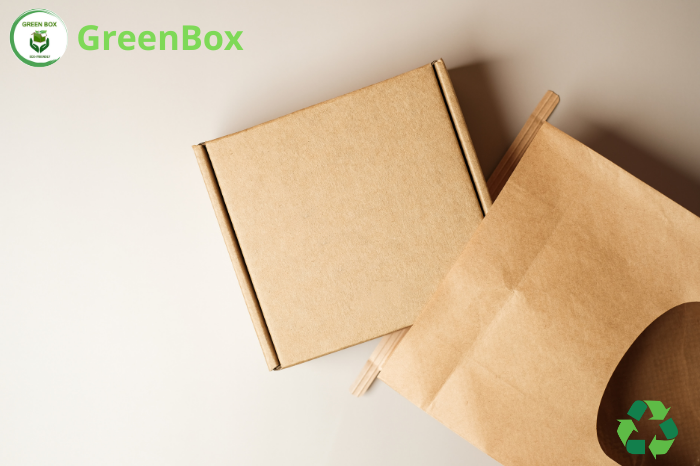

HÀNH TRÌNH CỦA MỘT CHIẾC HỘP CARTON – TỪ RÁC THẢI THÀNH TÀI NGUYÊN
Bạn có bao giờ tự hỏi một chiếc hộp carton sau khi nhận hàng online sẽ đi đâu? Thông thường, nó bị bỏ lại trong kho, vứt vào sọt rác hoặc bán ve chai với giá chỉ 1.500–3.500 đồng/kg. Điều đó đồng nghĩa với việc hộp carton – vốn còn nguyên giá trị sử dụng – đã bị lãng phí.
Theo ước tính, tại Cần Thơ, hàng chục nghìn hộp carton phát sinh mỗi tháng. Nhưng chỉ khoảng 15–20% được tái sử dụng trực tiếp, còn lại bị nghiền thành bột giấy, vừa tốn năng lượng sản xuất lại vừa gây áp lực môi trường. Một chiếc hộp carton 60×40×40 cm nếu tái sử dụng thêm 2–3 vòng có thể tiết kiệm hơn 30% chi phí bao bì cho doanh nghiệp bán hàng, đồng thời giảm lượng rác thải ra môi trường đáng kể.
GreenBox trong hành trình thứ hai
Đây chính là lúc GreenBox tham gia vào “hành trình thứ hai” của hộp carton. Thông qua hệ thống điểm thu hồi tại các trường đại học, cửa hàng và siêu thị, hộp carton được tập hợp, phân loại và đưa vào tái sử dụng.
Mỗi hộp được gắn mã QR code để theo dõi vòng đời, từ đó đảm bảo minh bạch và nâng cao hiệu quả quản lý. Người dùng khi trả lại hộp sẽ nhận được điểm thưởng có thể đổi quà hoặc voucher mua sắm.

Ví dụ thực tế
Một sinh viên mua sách online, sau khi nhận hàng có thể trả lại hộp cho GreenBox, tích điểm và sau 5–10 hộp có thể đổi được một phần quà nhỏ. Điều này vừa tạo động lực cho người tiêu dùng, vừa giúp kéo dài tuổi thọ sản phẩm.
Nhờ GreenBox, một chiếc hộp carton bình thường có thể đi qua 3–5 vòng đời sử dụng thay vì chỉ một lần, giảm thiểu chi phí và góp phần xây dựng chuỗi logistics xanh cho thành phố.

Với GreenBox, mỗi hộp carton không còn là rác thải bỏ đi mà trở thành tài nguyên tuần hoàn, mang lại lợi ích cho người dùng, doanh nghiệp và cả môi trường.